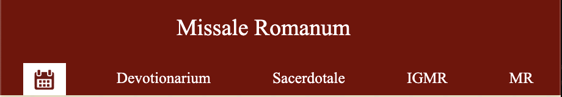

ACLARACIÓN IMPORTANTE: Esta aplicación nace únicamente
con la finalidad de ayudar al seguimiento de la Misa en latín,
incluyendo una de las posibles traducciones a los otros idiomas. Como
consecuencia de ir aumentando los idiomas, hemos incluido la posibilidad
de establecer dos cualesquiera, pero conviene no perder de vista que la
referencia es siempre la edición típica latina.
Somos
conscientes de que estas traducciones pueden no coincidir exactamente
con la que se escucharía en la Santa Misa celebrada en esa lengua, pues
eso requeriría, en primer lugar, disponer de todas las versiones
actualizadas aprobadas por cada Conferencia Episcopal y, en segundo
lugar, un ingente trabajo continuo que no estamos en condiciones de
asumir. Dejamos, por tanto, al buen criterio de los usuarios la
comprensión de esas posibles diferencias, especialmente cuando no se
utilice el latín como idioma principal.
Cabecera

En la parte superior de la pantalla se muestra el título de la aplicación
y una barra de navegación con las pestañas de acceso a las distintas
secciones.
El calendario se accede pulsando en el icono de calendario. Es la
página principal, desde la que se accede a la misa del día.
"Devotionarium": accede al devocionario. Como
el misal, es bilingüe, aunque los idiomas escogidos son independientes de
los del misal. Únicamente no es bilingüe el Santo Rosario.
En el Devocionario se encuentra el lugar para
editar la casilla de "Intenciones", a
la que luego se puede acceder desde el Ordinario del Misal mediante el
botón
"Sacerdotale": accede al prontuario para
sacerdotes, con el guion de celebraciones específicas. Es independiente
para cada idioma.
""IGMR"": accede al Instrucción General del
Misal Romano, en el idioma que se escoja.
""MR"": accede al Misal Romano, con la
configuración de la última vez que se accedió, sin alterar el contenido de
las pestañas.
Barra inferior o Barra de botones
Puede contener los siguientes botones:
Desplaza el texto hacia arriba.
Desplaza el texto hacia abajo.
En cada una de las pestañas se guarda la posición en la que se encuentra,
de forma que al pulsar la pestaña correspondiente, se vuelve a la
posición anterior.
Botón
asterisco: Despliega un menú vertical, que puede tener las siguientes
opciones:
Accede a la configuración de las preferencias de la app.
Accede a la pantalla inicial, con el calendario.
Borra el historial de la pestaña, y presenta el menú raíz correspondiente
(generalmente, el índice de la pestaña actual).
Presenta a esta pantalla de ayuda.
aux
Presenta esta pantalla de ayuda.
Borra el historial de la pestaña, y presenta el menú raíz correspondiente
(generalmente, el índice).
...
Intercambia los idiomas
primario/secundario, y la presentación entre una y dos columnas.
Activa/desactiva el modo nocturno.
ABC ◀︎
▶︎ ABC
Cambia el tipo de letra.
nn
▶︎ NN Aumenta el tamaño de la letra. Los valores se
corresponden con las posibilidades señaladas en las preferencias, y el
señalado a la izquierda es el actual. Los cambios sólo afectan a la
sesión actual, no alteran el valor de las preferencias.
NN
▶︎ nn Disminuye el tamaño de la letra. Los valores
se corresponden con las posibilidades señaladas en las preferencias, y el
señalado a la izquierda es el actual. Los cambios sólo afectan a la
sesión actual, no alteran el valor de las preferencias.
Activa/desactiva el modo de copia. Cuando está activado, sólo se
puede desplazar la pantalla los botones de página
anterior/siguiente.
Graba la
pantalla actual en una de las memorias que se presentan. Pregunta una
palabra clave que sirva para identificarla desde el menú que presenta el
siguiente botón.
Muestra
la pantalla guardada en la posición de memoria escogida, y en la misma
pestaña en la que se guardó.
Navega
hacia la página anterior de la misma pestaña.
Navega
hacia la página siguiente de la misma pestaña.
Calendarium
Muestra un calendario perpetuo, con referencias al calendario
litúrgico
universal. Al escoger una fecha, se presentan las posibles celebraciones
para ese día. Al cambiar de mes, o de año, siempre se debe pulsar después
un día concreto. Si se pulsa el botón ,
prepara las pestañas del Tiempo, Lecturas y Santo señaladas, y abre el
Misal en la pestaña del Ordinario.
IMPORTANTE:
Cuando hay varias posibilidades, se
debe escoger una del correspondiente menu desplegable.
Preferencias
Se puede elegir entre distintos tamaños de fuente, de rúbricas, el modo
de presentar las pestañas y botones, el modo de presentar la traducción
al segundo idioma, y el rango de desplazamiento de la pantalla al pulsar
los botones arriba/abajo. IMPORTANTE Conviene tener cuidado
al elegir el formato de dos columnas: en pantallas muy pequeñas, o con
tamaño de fuente muy grande, puede ocurrir que algunos párrafos aparezcan
en algún lugar en el que no debieran. Sobre todo puede ocurrir esto
cuando haya mucha diferencia en la longitud de los textos equivalentes en
uno y otro idioma.
Barra de pestañas
Puede ayudar a entender su funcionamiento pensar en las
pestañas como en las cintas de un misal, que nos ayudan a ir a las
distintas partes.
Su configuración puede ser:
1. Emergente: desaparece al cargar una nueva
página, y aparece al tocar en la zona superior de la pantalla (donde
estaría habitualmente)
2. Siempre
presente.
3. Emergente mediante
botón lateral: permanece oculta y sólo se ve el botón a la izquierda
de la pantalla, que la hace aparecer/ocultarse.
Ord Contiene el ordinario de la Misa. Si se
tiene activada la preferencia correspondiente, sobre el ordinario se
"montan" las distintas partes variables de la Misa, para no tener que
"navegar" durante la celebración.
Tmp Contiene los textos de las Misas propias
de cada tiempo litúrgico.
Snt Contiene los textos de las Misas de las
celebraciones de los Santos. Desde cada uno de ellos se puede acceder a
los textos comunes a los que hagan referencia, y a sus lecturas propias.
Com Contiene los textos de las Misas Comunes,
Votivas, para diversas necesidades, y Difuntos.
Lct Es el leccionario. Desde el menú principal
se accede a todas las lecturas, salvo las de los Santos, que se acceden
desde la misa de cada uno.
Pf Contiene todos los prefacios.
PE Contiene todas las Plegarias Eucarísticas.
Botones en el texto
▶︎ Generalmente,
expande un submenú.
... Muestra/oculta un
determinado texto. Generalmente, una rúbrica o una oración opcional.
+ Expande un determinado texto.
Generalmente, una oración opcional.
— Contrae un determinado
texto. Generalmente, una oración opcional, expandida anteriormente.
Si algo no funciona bien...
Si tiene cualquier problema con la aplicación, por
favor, contacte con nosotros por email, describiéndonos el problema con
el mayor detalle posible, y le intentaremos ayudar a solucionarlo (no se
olvide de decirnos el dispositivo y la versión del Sistema Operativo que
está utilizando). Le rogamos que no dé una puntuación baja a la
aplicación sin haber intentado comunicarnos los problemas
previamente.
Dirección de
contacto: hodie.evangelium@gmail.com
Le
sugerimos también que intente restaurar la configuración inicial de la
app -se borrarán todas las configuraciones personales, las intenciones,
etc-, mediente el siguiente botón:
1. Se aconseja escoger como idioma principal el del Misal correspondiente
al que vaya a utilizar el sacerdote en la celebración, porque puede
ocurrir que algunas oraciones sólo estén en esa versión del Misal.
2. También aconsejamos, y agradecemos, hacer un memento en la
Santa Misa por los autores de la aplicación. También puede rezar la
Liturgia de las Horas con la aplicación Liturgia
horarumLiturgia
Horarum.
3. Por último, recomendamos y agradecemos la difusión de la
aplicación EvangeliumEvangelium,
como forma de difundir la Palabra de Dios y ayudar a
contemplarla.
Y no dejes de calificar las aplicaciones
con
¡Muchas gracias!
IMPORTANT CLARIFICATION: This application was created solely to assist
with the Latin Mass, including one of the possible translations into other
languages. As the number of languages increases, we have included the
option to select two languages, but it is important to remember that the
reference is always the typical Latin edition.
We are aware that these translations may not exactly match what
would be heard in the Holy Mass celebrated in that language, as this would
require, firstly, having all the updated versions approved by each
Episcopal Conference, and secondly, an enormous continuous effort that we
are not in a position to undertake. Therefore, we leave to the good
judgment of the users the understanding of these potential differences,
especially when Latin is not used as the primary language.
Header
At the top of the screen, the title of the application is displayed along
with a navigation bar containing tabs for accessing different sections.
The calendar can be accessed by clicking on the calendar icon. This is
the main page, from which you can access the Mass of the day.
"Devotionarium": access the devotional. Like
the missal, it is bilingual, though the chosen languages are independent
of those in the missal. The Holy Rosary is the only exception, as it is
not bilingual.
In the Devotional, you can find the section
to edit the "Intentions" field, which
can later be accessed from the Missal's Ordinary through the button
"Sacerdotale": access the priest's manual, with
the script for specific celebrations. It is independent for each
language.
""IGMR"": access the General Instruction of the
Roman Missal in the selected language.
""MR"": access the Roman Missal, with the
configuration from the last time it was accessed, without altering the
content of the tabs.
Bottom Bar or Button Bar
It can contain the following buttons:
Scrolls the text up.
Scrolls the text down.
In each tab, the position is saved, so when the corresponding tab is
clicked, it returns to the previous position.
Asterisk
button: Displays a vertical menu, which may have the following options:
Access the app preferences configuration.
Access the home screen, with the calendar.
Clear the tab history, and display the corresponding root menu (usually,
the index of the current tab).
Display this help screen.
aux
Display this help screen.
Clear the tab history, and display the corresponding root menu (usually,
the index).
... Toggle
between primary/secondary languages, and the presentation between one and
two columns.
Enable/disable night mode.
ABC ◀︎
▶︎ ABC
Change the font style.
nn
▶︎ NN Increase the font size. The values correspond
to
the options indicated in the preferences, and the one on the left is the
current value. Changes affect only the current session and do not
modify the preference settings.
NN
▶︎ nn Decrease the font size. The values correspond
to
the options indicated in the preferences, and the one on the left is the
current value. Changes affect only the current session and do not
modify the preference settings.
Enable/disable copy mode. When enabled, the screen can only be
scrolled using the previous/next page buttons.
Saves the
current screen in one of the available memory slots. A keyword will be
prompted to identify it from the menu shown by the next button.
Displays
the saved screen from the chosen memory slot, in the same tab where it was
saved.
Navigate
to the previous page in the same tab.
Navigate
to the next page in the same tab.
Calendarium
Displays a perpetual calendar with references to the universal
liturgical calendar. When selecting a date, possible celebrations for that
day are shown. When changing the month or year, always select a specific
day afterward. If the
button is clicked, it prepares the indicated tabs for Time, Readings, and
Saint, and opens the Missal on the Ordinary tab.
IMPORTANT: When there are multiple options, you must
select one from the corresponding dropdown menu.
Preferences
You can choose between different font sizes, rubric sizes, tab and button
display modes, the method for presenting the second language translation,
and the screen scrolling range when pressing the up/down
buttons. IMPORTANT Be careful when choosing the two-column
format: on very small screens or with very large font sizes, some
paragraphs may appear where they shouldn't. This is especially likely
when there is a significant difference in the length of equivalent texts
in the two languages.
Tab Bar
It may help to think of the tabs as the ribbons of a
missal, guiding us to different sections.
Its configuration can be:
1. Pop-up: disappears when loading a new page
and reappears when you tap the top area of the screen (where it would
usually be).
2. Always
present.
3. Pop-up via side
button: remains hidden and only the button on the left side of the screen
is visible, which toggles it on/off.
Ord Contains the Ordinary of the Mass. If the
corresponding preference is enabled, the various variable parts of the
Mass are "overlaid" on the Ordinary, so there is no need to "navigate"
during the celebration.
Tmp Contains texts for Masses specific to each
liturgical season.
Snt Contains texts for the Masses celebrating
the Saints. From each, you can access the related common texts and their
proper readings.
Com Contains texts for Common Masses, Votive
Masses, Masses for various needs, and for the deceased.
Lct This is the Lectionary. From the main
menu, you can access all readings, except for those of the Saints, which
are accessed from their respective Masses.
Pf Contains all the Prefaces.
PE Contains all the Eucharistic Prayers.
Buttons in the Text
▶︎ Generally, expands
a submenu.
... Shows/hides specific text.
Typically, a rubric or optional prayer.
+ Expands specific text. Usually,
an optional prayer.
— Collapses specific text.
Usually, an optional prayer previously expanded.
If something is not working properly...
If you encounter any issues with the app, please contact us via email,
describing the problem in as much detail as possible, and we will try to
help you solve it (please don't forget to tell us the device and the
version of the operating system you are using). We kindly ask you not to
give a low rating to the app without attempting to contact us first.
Contact address: hodie.evangelium@gmail.com
We also suggest that you try restoring the app's initial settings - all
personal configurations, intentions, etc. will be deleted - via the
following button:
1. It is recommended to choose the primary language corresponding to the
Missal the priest will use during the celebration, as some prayers may
only be available in that version of the Missal.
2. We also recommend and appreciate making a memento during the
Holy Mass for the app's authors. You can also pray the Liturgy of the
Hours with the Liturgia
horarumLiturgia
Horarum app.
3. Finally, we recommend and appreciate spreading the EvangeliumEvangelium
app, as a way to spread the Word of God and help contemplate
it.
And don't forget to rate the apps with
Thank you very much!
CHIARIMENTO IMPORTANTE: Questa applicazione nasce esclusivamente con lo
scopo di aiutare nel seguire la Messa in latino, includendo una delle
possibili traduzioni in altre lingue. Con l’aumento delle lingue, abbiamo
incluso la possibilità di scegliere due lingue, ma è importante non
dimenticare che il riferimento è sempre l’edizione tipica latina.
Siamo consapevoli che queste traduzioni potrebbero non
corrispondere esattamente a ciò che si ascolterebbe nella Santa Messa
celebrata in quella lingua, poiché ciò richiederebbe, in primo luogo,
avere tutte le versioni aggiornate approvate da ciascuna Conferenza
Episcopale e, in secondo luogo, un enorme lavoro continuo che non siamo in
grado di assumere. Pertanto, lasciamo al buon giudizio degli utenti la
comprensione di queste possibili differenze, soprattutto quando non si
utilizza il latino come lingua principale.
Intestazione
Nella parte superiore della schermata viene visualizzato il titolo
dell’applicazione e una barra di navigazione con le schede per accedere
alle diverse sezioni.
Il calendario si accede cliccando sull'icona del calendario. Questa è
la pagina principale, dalla quale si accede alla Messa del giorno.
"Devotionarium": accedi al devizionario. Come
il messale, è bilingue, anche se le lingue scelte sono indipendenti da
quelle del messale. L’unica eccezione è il Santo Rosario, che non è
bilingue.
Nel Devocionario si trova la sezione per
modificare il campo "Intenzioni", che
può essere successivamente accessibile dall'Ordinario del Messale tramite
il pulsante
"Sacerdotale": accedi al prontuario per
sacerdoti, con il copione delle celebrazioni specifiche. È indipendente
per ogni lingua.
""IGMR"": accedi all'Istruzione Generale del
Messale Romano nella lingua scelta.
""MR"": accedi al Messale Romano, con la
configurazione dell'ultima volta che è stato aperto, senza alterare il
contenuto delle schede.
Barra Inferiore o Barra dei Pulsanti
Può contenere i seguenti pulsanti:
Scorre il testo verso l'alto.
Scorre il testo verso il basso.
In ogni scheda viene salvata la posizione in cui ci si trova, in modo che,
cliccando sulla scheda corrispondente, si torni alla posizione precedente.
Pulsante
asterisco: Espande un menu verticale, che può avere le seguenti opzioni:
Accedi alla configurazione delle preferenze dell'app.
Accedi alla schermata iniziale, con il calendario.
Cancella la cronologia della scheda e visualizza il menu radice
corrispondente (di solito l'indice della scheda attuale).
Mostra questa schermata di aiuto.
aux
Mostra questa schermata di aiuto.
Cancella la cronologia della scheda e visualizza il menu radice
corrispondente (di solito l'indice).
...
Alterna tra le lingue primarie/secondarie e la visualizzazione tra una o
due colonne.
Attiva/disattiva la modalità notturna.
ABC ◀︎
▶︎ ABC
Cambia il tipo di carattere.
nn
▶︎ NN Aumenta la dimensione del carattere. I valori
corrispondono
alle opzioni indicate nelle preferenze, e quello a sinistra è il valore
attuale. Le modifiche riguardano solo la sessione attuale e non
alterano le impostazioni delle preferenze.
NN
▶︎ nn Diminuisci la dimensione del carattere. I
valori corrispondono
alle opzioni indicate nelle preferenze, e quello a sinistra è il valore
attuale. Le modifiche riguardano solo la sessione attuale e non
alterano le impostazioni delle preferenze.
Attiva/disattiva la modalità copia. Quando è attiva, lo schermo può
essere
scorso solo usando i pulsanti pagina precedente/successiva.
Salva lo
schermo attuale in una delle memorie disponibili. Verrà richiesto di
inserire una parola chiave per identificarlo dal menu mostrato dal
pulsante successivo.
Mostra
lo schermo salvato nella posizione di memoria scelta, nella stessa scheda
in cui è stato salvato.
Vai alla
pagina precedente nella stessa scheda.
Vai alla
pagina successiva nella stessa scheda.
Calendarium
Mostra un calendario perpetuo con riferimenti al calendario liturgico
universale. Selezionando una data, vengono mostrate le celebrazioni
possibili per quel giorno. Cambiando mese o anno, è sempre necessario
selezionare successivamente un giorno specifico. Se si preme il pulsante
, prepara le schede
indicate per Tempo, Letture e Santo, e apre il Messale nella scheda
dell'Ordinario.
IMPORTANTE: Quando ci sono più opzioni, devi selezionarne
una dal menu a discesa corrispondente.
Preferenze
È possibile scegliere tra diverse dimensioni dei caratteri, delle
rubriche, modalità di visualizzazione delle schede e dei pulsanti, metodo
di presentazione della traduzione in una seconda lingua, e intervallo di
scorrimento dello schermo quando si premono i pulsanti
su/giù. IMPORTANTE Fai attenzione quando scegli il formato a
due colonne: su schermi molto piccoli o con caratteri molto grandi, alcuni
paragrafi potrebbero apparire in posizioni sbagliate. Questo è
particolarmente probabile quando c'è una notevole differenza nella
lunghezza dei testi equivalenti nelle due lingue.
Barra delle schede
Può essere utile pensare alle schede come ai nastri di un
messale, che ci guidano nelle diverse sezioni.
La sua configurazione può essere:
1. A
comparsa: scompare quando si carica una nuova pagina e riappare
toccando la parte superiore dello schermo (dove si troverebbe di
solito).
2. Sempre
presente.
3. A comparsa tramite
pulsante laterale: rimane nascosta e solo il pulsante sul lato sinistro
dello schermo è visibile, per attivarla o disattivarla.
Ord Contiene l'Ordinario della Messa. Se è
attivata la preferenza corrispondente, le diverse parti variabili della
Messa vengono "sovrapposte" all'Ordinario, evitando così di dover
"navigare" durante la celebrazione.
Tmp Contiene i testi delle Messe proprie di
ogni tempo liturgico.
Snt Contiene i testi delle Messe per le
celebrazioni dei Santi. Da ciascuno si può accedere ai testi comuni di
riferimento e alle letture proprie.
Com Contiene i testi delle Messe Comuni,
Votive, per varie necessità e per i defunti.
Lct È il Lezionario. Dal menu principale si
accede a tutte le letture, tranne quelle dei Santi, che si accedono dalla
loro rispettiva Messa.
Pf Contiene tutti i Prefazi.
PE Contiene tutte le Preghiere Eucaristiche.
Pulsanti nel Testo
▶︎ Generalmente,
espande un sottomenu.
... Mostra/nasconde un testo
specifico. Di solito, una rubrica o una preghiera facoltativa.
+ Espande un testo specifico. Di
solito, una preghiera facoltativa.
— Comprimi un testo
specifico. Di solito, una preghiera facoltativa precedentemente espansa.
Se qualcosa non funziona correttamente...
Se hai problemi con l'app, per favore contattaci via email, descrivendo
il problema con il maggior dettaglio possibile, e cercheremo di aiutarti
a risolverlo (non dimenticare di dirci il dispositivo e la versione del
sistema operativo che stai utilizzando). Ti chiediamo gentilmente di non
dare una valutazione bassa all'app senza aver provato prima a comunicarci
il problema.
Indirizzo di contatto: hodie.evangelium@gmail.com
Ti suggeriamo anche di provare a ripristinare le impostazioni iniziali
dell'app - tutte le configurazioni personali, le intenzioni, ecc.
verranno cancellate - utilizzando il seguente pulsante:
1. Si consiglia di scegliere come lingua principale quella del Messale
utilizzato dal sacerdote durante la celebrazione, poiché alcune preghiere
potrebbero essere disponibili solo in quella versione del Messale.
2. Consigliamo inoltre, e ringraziamo, di fare un memento durante
la Santa Messa per gli autori dell'app. È possibile pregare anche la
Liturgia delle Ore con l'app Liturgia
horarumLiturgia
Horarum.
3. Infine, consigliamo e ringraziamo per la diffusione dell'app
EvangeliumEvangelium,
come mezzo per diffondere la Parola di Dio e aiutare a
contemplarla.
E non dimenticate di valutare le app con
Grazie mille!
CLARIFICATION IMPORTANTE : Cette application a été créée uniquement dans
le but d'aider à suivre la Messe en latin, incluant l'une des traductions
possibles dans d'autres langues. Avec l'augmentation du nombre de langues,
nous avons inclus la possibilité de sélectionner deux langues, mais il est
important de se rappeler que la référence est toujours l'édition typique
latine.
Nous sommes conscients que ces traductions peuvent ne pas
correspondre exactement à ce qui serait entendu lors de la Sainte Messe
célébrée dans cette langue, car cela nécessiterait, tout d'abord, de
disposer de toutes les versions actualisées approuvées par chaque
Conférence épiscopale et, en second lieu, un travail considérable et
continu que nous ne sommes pas en mesure d'assumer. Nous laissons donc à
la discrétion des utilisateurs la compréhension de ces différences
possibles, notamment lorsque le latin n'est pas utilisé comme langue
principale.
En-tête
En haut de l'écran, le titre de l'application est affiché avec une barre
de navigation contenant des onglets pour accéder aux différentes sections.
Le calendrier est accessible en cliquant sur l'icône du calendrier.
C'est la page principale, à partir de laquelle vous pouvez accéder à la
Messe du jour.
"Devotionarium" : accédez au livre de
dévotions. Comme le missel, il est bilingue, bien que les langues choisies
soient indépendantes de celles du missel. Seul le Saint Rosaire n'est pas
bilingue.
"Sacerdotale" : accédez au manuel des prêtres,
avec le script des célébrations spécifiques. Il est indépendant pour
chaque langue.
Dans le Dévotionnaire, vous trouverez la
section pour éditer le champ "Intentions", qui peut ensuite être consulté
depuis l'Ordinaire du Missel via le bouton
""IGMR"" : accédez à l'Instruction Générale du
Missel Romain dans la langue choisie.
""MR"" : accédez au Missel Romain, avec la
configuration de la dernière fois que vous y avez accédé, sans modifier le
contenu des onglets.
Barre Inférieure ou Barre de Boutons
Elle peut contenir les boutons suivants :
Fait défiler le texte vers le haut.
Fait défiler le texte vers le bas.
Dans chaque onglet, la position est enregistrée, de sorte que lorsque
l'onglet correspondant est cliqué, il revient à la position précédente.
Bouton
astérisque : Affiche un menu vertical, qui peut avoir les options
suivantes :
Accédez à la configuration des préférences de l'application.
Accédez à l'écran d'accueil, avec le calendrier.
Effacez l'historique de l'onglet et affichez le menu racine correspondant
(généralement, l'index de l'onglet actuel).
Affichez cet écran d'aide.
aux
Affichez cet écran d'aide.
Effacez l'historique de l'onglet et affichez le menu racine correspondant
(généralement, l'index).
...
Alternez entre les langues principales/secondaires et l'affichage entre
une et deux colonnes.
Activer/désactiver le mode nuit.
ABC ◀︎
▶︎ ABC
Changer le style de police.
nn
▶︎ NN Augmentez la taille de la police. Les valeurs
correspondent
aux options indiquées dans les préférences, et celle de gauche est la
valeur actuelle. Les modifications ne concernent que la session en
cours et ne modifient pas les préférences.
NN
▶︎ nn Diminuez la taille de la police. Les valeurs
correspondent
aux options indiquées dans les préférences, et celle de gauche est la
valeur actuelle. Les modifications ne concernent que la session en
cours et ne modifient pas les préférences.
Activer/désactiver le mode copie. Lorsqu'il est activé, l'écran ne
peut être
défilé qu'avec les boutons page précédente/suivante.
Enregistre
l'écran
actuel dans l'une des mémoires disponibles. Une saisie de mot-clé est
demandée pour l'identifier dans le menu présenté par le bouton suivant.
Affiche
l'écran sauvegardé à l'emplacement mémoire choisi, dans le même onglet où
il a été enregistré.
Accède à
la page précédente dans le même onglet.
Accède à
la page suivante dans le même onglet.
Calendarium
Affiche un calendrier perpétuel avec des références au calendrier
liturgique universel. En sélectionnant une date, les célébrations
possibles pour ce jour sont affichées. Lors du changement de mois ou
d'année, il est toujours nécessaire de sélectionner un jour précis
ensuite. Si le bouton est
cliqué, il prépare les onglets indiqués pour Temps, Lectures et Saint, et
ouvre le Missel dans l'onglet de l'Ordinarium.
IMPORTANT : Lorsqu'il y a plusieurs options, il faut en
choisir une dans le menu déroulant correspondant.
Préférences
Vous pouvez choisir entre différentes tailles de police, tailles de
rubriques, modes d'affichage des onglets et des boutons, méthode de
présentation de la traduction dans une deuxième langue, et l'amplitude du
défilement de l'écran lors de l'utilisation des boutons
haut/bas. IMPORTANT Faites attention lors du choix du format
à deux colonnes : sur des écrans très petits ou avec des tailles de police
très grandes, certains paragraphes peuvent apparaître à des endroits
incorrects. Ce problème est particulièrement fréquent lorsqu'il y a une
grande différence de longueur entre les textes équivalents dans les deux
langues.
Barre d'onglets
Il peut être utile de penser aux onglets comme aux rubans
d'un missel, qui nous aident à accéder aux différentes sections.
Sa configuration peut être :
1. Émergent : disparaît lors du chargement
d'une nouvelle page et réapparaît en touchant la partie supérieure de
l'écran (où il se trouverait habituellement).
2. Toujours présent.
3. Émergent via un bouton latéral : reste caché
et seul le bouton à gauche de l'écran permet de
l'afficher/masquer.
Ord Contient l'Ordinaire de la Messe. Si la
préférence correspondante est activée, les différentes parties variables
de la Messe sont "superposées" à l'Ordinaire, évitant ainsi d'avoir à
"naviguer" pendant la célébration.
Tmp Contient les textes des Messes propres à
chaque temps liturgique.
Snt Contient les textes des Messes des
célébrations des Saints. Depuis chacun, on peut accéder aux textes communs
auxquels ils font référence et à leurs lectures propres.
Com Contient les textes des Messes communes,
votives, pour diverses nécessités, et des défunts.
Lct Il s'agit du Lectionnaire. Depuis le menu
principal, on accède à toutes les lectures, sauf celles des Saints,
accessibles depuis la Messe de chacun.
Pf Contient tous les Préfaces.
PE Contient toutes les Prières Eucharistiques.
Boutons dans le Texte
▶︎ Généralement,
ouvre un sous-menu.
... Affiche/masque un texte
spécifique. Généralement, une rubrique ou une prière facultative.
+ Déploie un texte spécifique.
Généralement, une prière facultative.
— Réduit un texte
spécifique. Généralement, une prière facultative précédemment déployée.
Si quelque chose ne fonctionne pas correctement...
Si vous rencontrez des problèmes avec l'application, veuillez nous
contacter par e-mail, en décrivant le problème dans les moindres détails,
et nous essaierons de vous aider à le résoudre (n'oubliez pas de nous
indiquer l'appareil et la version du système d'exploitation que vous
utilisez). Nous vous demandons de ne pas attribuer une note basse à
l'application sans avoir d'abord tenté de nous contacter.
Adresse de contact : hodie.evangelium@gmail.com
Nous vous suggérons également d'essayer de restaurer les paramètres
initiaux de l'application - toutes les configurations personnelles, les
intentions, etc. seront supprimées - via le bouton suivant :
1. Il est conseillé de choisir comme langue principale celle du Missel
utilisé par le prêtre lors de la célébration, car certaines prières
pourraient être disponibles uniquement dans cette version du Missel.
2. Nous recommandons également, et remercions, de faire un memento
lors de la Sainte Messe pour les auteurs de l'application. Vous pouvez
également prier la Liturgie des Heures avec l'application Liturgia
horarumLiturgia
Horarum.
3. Enfin, nous recommandons et remercions la diffusion de
l'application EvangeliumEvangelium,
comme moyen de diffuser la Parole de Dieu et d'aider à la
contempler.
Et n'oubliez pas d'évaluer les applications
avec
Merci beaucoup !
WICHTIGER HINWEIS: Diese Anwendung wurde ausschließlich entwickelt, um bei
der Verfolgung der lateinischen Messe zu helfen, einschließlich einer der
möglichen Übersetzungen in andere Sprachen. Mit der zunehmenden Anzahl an
Sprachen haben wir die Möglichkeit eingebaut, zwei Sprachen auszuwählen,
aber es ist wichtig zu beachten, dass die Referenz immer die typische
lateinische Ausgabe bleibt.
Wir sind uns bewusst, dass diese Übersetzungen möglicherweise
nicht genau dem entsprechen, was in der Heiligen Messe in dieser Sprache
gehört werden würde, da dies zunächst erfordern würde, dass alle
aktualisierten Versionen von jeder Bischofskonferenz genehmigt werden und
zweitens eine enorme kontinuierliche Arbeit, die wir nicht übernehmen
können. Daher überlassen wir es dem guten Urteil der Nutzer, diese
möglichen Unterschiede zu verstehen, insbesondere wenn Latein nicht als
Hauptsprache verwendet wird.
Kopfzeile
Am oberen Rand des Bildschirms wird der Titel der Anwendung zusammen mit
einer Navigationsleiste angezeigt, die Tabs für den Zugriff auf
verschiedene Abschnitte enthält.
Der Kalender kann durch Klicken auf das Kalendersymbol aufgerufen
werden. Dies ist die Hauptseite, von der aus Sie auf die Messe des Tages
zugreifen können.
"Devotionarium": Zugriff auf das Gebetbuch. Wie
das Messbuch ist es zweisprachig, wobei die gewählten Sprachen unabhängig
von denen des Messbuchs sind. Das einzige, was nicht zweisprachig ist, ist
der Heilige Rosenkranz.
Im Gebetbuch finden Sie den Bereich, um das
Feld "Fürbitten" zu bearbeiten, auf
das später aus dem Ordinarium des Messbuchs über die Schaltfläche
"Sacerdotale": Zugriff auf das Handbuch für
Priester mit dem Skript für spezifische Feiern. Es ist für jede Sprache
unabhängig.
""IGMR"": Zugriff auf die Allgemeine Einführung
des Römischen Messbuchs in der gewählten Sprache.
""MR"": Zugriff auf das Römische Messbuch, mit
der Konfiguration der letzten Nutzung, ohne den Inhalt der Tabs zu
ändern.
Unterste Leiste oder Schaltflächenleiste
Sie kann die folgenden Schaltflächen enthalten:
Scrollt den Text nach oben.
Scrollt den Text nach unten.
In jedem Tab wird die Position gespeichert, sodass beim Klicken auf den
entsprechenden Tab die vorherige Position wiederhergestellt wird.
Stern-Schaltfläche: Zeigt ein vertikales Menü an, das folgende Optionen
enthalten kann:
Greifen Sie auf die Konfiguration der App-Einstellungen zu.
Greifen Sie auf den Startbildschirm mit dem Kalender zu.
Löschen Sie den Tab-Verlauf und zeigen Sie das entsprechende Hauptmenü an
(normalerweise das Index des aktuellen Tabs).
Zeigen Sie diesen Hilfebildschirm an.
aux
Zeigen Sie diesen Hilfebildschirm an.
Löschen Sie den Tab-Verlauf und zeigen Sie das entsprechende Hauptmenü an
(normalerweise das Index).
...
Wechseln Sie zwischen Primär-/Sekundärsprache und der Anzeige zwischen
einer und zwei Spalten.
Aktivieren/deaktivieren Sie den
Nachtmodus.
ABC ◀︎
▶︎ ABC
Ändern Sie den Schriftstil.
nn
▶︎ NN Erhöhen Sie die Schriftgröße. Die Werte
entsprechen
den in den Einstellungen angegebenen Optionen, und der Wert links ist der
aktuelle. Änderungen gelten nur für die aktuelle Sitzung und ändern die
Voreinstellungen nicht.
NN
▶︎ nn Verringern Sie die Schriftgröße. Die Werte
entsprechen
den in den Einstellungen angegebenen Optionen, und der Wert links ist der
aktuelle. Änderungen gelten nur für die aktuelle Sitzung und ändern die
Voreinstellungen nicht.
Aktivieren/deaktivieren Sie
den Kopiermodus. Wenn aktiviert, kann der
Bildschirm nur mit den
Tasten für vorherige/nächste Seite verschoben werden.
Speichert
den
aktuellen Bildschirm in einem der verfügbaren Speicherplätze. Es wird ein
Stichwort abgefragt, um ihn im Menü des nächsten Buttons zu
identifizieren.
Zeigt
den gespeicherten Bildschirm aus dem gewählten Speicherplatz an, und zwar
im gleichen Tab, in dem er gespeichert wurde.
Zurück zur
vorherigen Seite im selben Tab.
Weiter
zur nächsten Seite im selben Tab.
Calendarium
Zeigt einen ewigen Kalender mit Verweisen auf den universalen
liturgischen Kalender. Beim Auswählen eines Datums werden die möglichen
Feiern für diesen Tag angezeigt. Beim Wechsel des Monats oder Jahres muss
danach immer ein spezifischer Tag ausgewählt werden. Wenn der Button gedrückt wird, werden die
angegebenen Tabs für Zeit, Lesungen und Heilige vorbereitet, und das
Messbuch im Tab Ordinarium geöffnet.
WICHTIG: Wenn es mehrere Möglichkeiten gibt, muss eine aus
dem entsprechenden Dropdown-Menü ausgewählt werden.
Einstellungen
Es können verschiedene Schriftgrößen, Rubrikengrößen, Anzeige-Modi für
Tabs und Buttons, die Präsentation der Übersetzung in die zweite Sprache
sowie der Bildlaufbereich beim Drücken der Hoch-/Runter-Tasten ausgewählt
werden. WICHTIG Seien Sie vorsichtig bei der Wahl des
Zwei-Spalten-Formats: Auf sehr kleinen Bildschirmen oder mit sehr großen
Schriftgrößen können einige Absätze an falschen Stellen
erscheinen. Dies ist besonders wahrscheinlich, wenn es große
Unterschiede in der Länge der äquivalenten Texte in den beiden Sprachen
gibt.
Registerkartenleiste
Es kann hilfreich sein, die Registerkarten als die Bänder
eines Messbuchs zu betrachten, die uns zu verschiedenen Abschnitten
führen.
Ihre Konfiguration kann sein:
1. Pop-up: verschwindet beim Laden einer neuen
Seite und erscheint wieder, wenn man den oberen Bereich des Bildschirms
berührt (wo sie sich normalerweise befinden würde).
2. Immer sichtbar.
3. Pop-up über Seitentaste: bleibt verborgen,
und nur der
Knopf auf der linken Seite des Bildschirms ist sichtbar, um sie
ein-/auszublenden.
Ord Enthält das Ordinarium der Messe. Wenn die
entsprechende Einstellung aktiviert ist, werden die verschiedenen
variablen Teile der Messe auf das Ordinarium "überlagert", sodass während
der Feier nicht "navigiert" werden muss.
Tmp Enthält die Texte für Messen, die den
jeweiligen liturgischen Zeiten zugeordnet sind.
Snt Enthält die Texte der Heiligenmessen. Von
hier aus können Sie auf die entsprechenden gemeinsamen Texte und deren
eigene Lesungen zugreifen.
Com Enthält die Texte für Gemeinsame Messen,
Votivmessen, Messen für verschiedene Bedürfnisse und für Verstorbene.
Lct Dies ist das Lektionar. Vom Hauptmenü aus
können alle Lesungen aufgerufen werden, außer die der Heiligen, die über
ihre jeweilige Messe zugänglich sind.
Pf Enthält alle Präfationen.
PE Enthält alle Eucharistischen Gebete.
Schaltflächen im Text
▶︎ Öffnet in der
Regel ein Untermenü.
... Zeigt/versteckt einen
bestimmten Text. Normalerweise eine Rubrik oder ein optionales Gebet.
+ Zeigt einen bestimmten Text an.
Normalerweise ein optionales Gebet.
— Versteckt einen bestimmten
Text. Normalerweise ein zuvor angezeigtes optionales Gebet.
Wenn etwas nicht richtig funktioniert...
Wenn Sie ein Problem mit der App haben, kontaktieren Sie uns bitte per
E-Mail und beschreiben Sie das Problem so detailliert wie möglich. Wir
werden versuchen, Ihnen bei der Lösung zu helfen (vergessen Sie bitte
nicht, uns das Gerät und die Version des Betriebssystems, das Sie
verwenden, mitzuteilen). Wir bitten Sie, der App keine niedrige Bewertung
zu geben, ohne uns vorher über die Probleme zu informieren.
Kontaktadresse: hodie.evangelium@gmail.com
Wir empfehlen Ihnen auch, zu versuchen, die Anfangseinstellungen der
App wiederherzustellen – alle persönlichen Konfigurationen, Absichten
usw. werden gelöscht – über den folgenden Button:
1. Es wird empfohlen, die Hauptsprache entsprechend dem Messbuch
auszuwählen, das der Priester während der Feier verwendet, da einige
Gebete möglicherweise nur in dieser Version des Messbuchs verfügbar sind.
2. Wir empfehlen und danken, wenn Sie während der Heiligen Messe
ein Memento für die Autoren der App machen. Sie können auch das
Stundengebet mit der App Liturgia
horarumLiturgia
Horarum beten.
3. Schließlich empfehlen wir und danken für die Verbreitung der
App EvangeliumEvangelium,
um das Wort Gottes zu verbreiten und zu seiner Betrachtung
beizutragen.
Und vergessen Sie nicht, die Apps zu bewerten
mit
Vielen Dank!
ESCLARECIMENTO IMPORTANTE: Esta aplicação foi criada exclusivamente com o
objetivo de auxiliar no acompanhamento da Missa em latim, incluindo uma
das possíveis traduções para outros idiomas. Com o aumento de idiomas,
incluímos a possibilidade de selecionar dois idiomas, mas é importante
lembrar que a referência é sempre a edição típica latina.
Estamos cientes de que essas traduções podem não corresponder
exatamente ao que seria ouvido na Santa Missa celebrada nessa língua, pois
isso exigiria, em primeiro lugar, ter todas as versões atualizadas
aprovadas por cada Conferência Episcopal e, em segundo lugar, um grande
esforço contínuo que não estamos em condições de assumir. Portanto,
deixamos ao bom critério dos usuários a compreensão dessas possíveis
diferenças, especialmente quando o latim não é utilizado como língua
principal.
Cabeçalho
Na parte superior da tela, o título da aplicação é exibido juntamente com
uma barra de navegação contendo abas para acessar as diferentes seções.
O calendário pode ser acessado clicando no ícone de calendário. Esta é
a página principal, a partir da qual você pode acessar a Missa do
dia.
"Devotionarium": acesse o devocionário. Como o
missal, é bilíngue, embora os idiomas escolhidos sejam independentes dos
do missal. O único que não é bilíngue é o Santo Rosário.
No Devocionário, você encontrará a seção para
editar o campo "Intenções", que poderá
ser acessado posteriormente no Ordinário do Missal através do botão
"Sacerdotale": acesse o manual para padres, com
o roteiro das celebrações específicas. É independente para cada
idioma.
""IGMR"": acesse a Instrução Geral do Missal
Romano no idioma escolhido.
""MR"": acesse o Missal Romano, com a
configuração da última vez que foi acessado, sem alterar o conteúdo das
abas.
Barra Inferior ou Barra de Botões
Pode conter os seguintes botões:
Desloca o texto para cima.
Desloca o texto para baixo.
Em cada aba, a posição é salva, de forma que ao clicar na aba
correspondente, volta-se à posição anterior.
Botão de
asterisco: Exibe um menu vertical, que pode ter as seguintes opções:
Acesse as configurações de preferências do aplicativo.
Acesse a tela inicial, com o calendário.
Limpe o histórico da guia e exiba o menu raiz correspondente (geralmente,
o índice da guia atual).
Exiba esta tela de ajuda.
aux
Exiba esta tela de ajuda.
Limpe o histórico da guia e exiba o menu raiz correspondente (geralmente,
o índice).
... Altere
entre os idiomas primário/secundário e a apresentação entre uma e duas
colunas.
Ativar/desativar o modo noturno.
ABC ◀︎
▶︎ ABC
Alterar o estilo da fonte.
nn
▶︎ NN Aumentar o tamanho da fonte. Os valores
correspondem
às opções indicadas nas preferências, e o da esquerda é o valor
atual. As alterações afetam apenas a sessão atual e não modificam as
configurações de preferências.
NN
▶︎ nn Diminuir o tamanho da fonte. Os valores
correspondem
às opções indicadas nas preferências, e o da esquerda é o valor
atual. As alterações afetam apenas a sessão atual e não modificam as
configurações de preferências.
Ativar/desativar o modo de cópia. Quando ativado, a tela só pode
ser rolada
usando os botões de página anterior/próxima.
Salva a
tela
atual em um dos espaços de memória disponíveis. Será solicitada uma
palavra-chave para identificá-la no menu exibido pelo próximo botão.
Exibe a
tela salva na posição de memória escolhida, na mesma aba onde foi salva.
Navegar
para a página anterior na mesma aba.
Navegar
para a próxima página na mesma aba.
Calendarium
Exibe um calendário perpétuo com referências ao calendário litúrgico
universal. Ao selecionar uma data, as celebrações possíveis para esse dia
são exibidas. Ao mudar de mês ou de ano, é sempre necessário selecionar um
dia específico em seguida. Se o botão for pressionado, ele prepara as abas indicadas
para Tempo, Leituras e Santo, e abre o Missal na aba Ordinário.
IMPORTANTE: Quando há várias opções, é necessário
selecionar uma no menu suspenso correspondente.
Preferências
Você pode escolher entre diferentes tamanhos de fonte, tamanhos de
rubricas, modos de exibição de abas e botões, o método de apresentação da
tradução para o segundo idioma, e a faixa de rolagem da tela ao pressionar
os botões cima/baixo. IMPORTANTE Tenha cuidado ao escolher o
formato de duas colunas: em telas muito pequenas ou com fontes muito
grandes, alguns parágrafos podem aparecer em lugares errados. Isso
ocorre especialmente quando há uma grande diferença no comprimento dos
textos equivalentes nos dois idiomas.
Barra de Abas
Pode ajudar a pensar nas abas como as fitas de um missal,
que nos guiam pelas diferentes partes.
Sua configuração pode ser:
1. Pop-up: desaparece ao carregar uma nova
página e reaparece ao tocar na parte superior da tela (onde normalmente
estaria).
2. Sempre
presente.
3. Pop-up por botão
lateral: permanece oculta e apenas o botão no lado esquerdo
da tela é visível, que a exibe/oculta.
Ord Contém o Ordinário da Missa. Se a
preferência correspondente estiver ativada, as diversas partes variáveis
da Missa são "sobrepostas" ao Ordinário, evitando a necessidade de
"navegar" durante a celebração.
Tmp Contém os textos das Missas próprias de
cada tempo litúrgico.
Snt Contém os textos das Missas das
celebrações dos Santos. De cada uma delas, é possível acessar os textos
comuns correspondentes e suas leituras próprias.
Com Contém os textos das Missas Comuns,
Votivas, para diversas necessidades e para os defuntos.
Lct É o Leccionário. A partir do menu
principal, você pode acessar todas as leituras, exceto as dos Santos, que
são acessadas a partir da Missa de cada um.
Pf Contém todos os Prefácios.
PE Contém todas as Orações Eucarísticas.
Botões no Texto
▶︎ Geralmente,
expande um submenu.
... Mostra/oculta um texto
específico. Geralmente, uma rubrica ou oração opcional.
+ Expande um texto específico.
Geralmente, uma oração opcional.
— Contrai um texto
específico. Geralmente, uma oração opcional anteriormente expandida.
Se algo não estiver funcionando corretamente...
Se você encontrar algum problema com o aplicativo, por favor, entre em
contato conosco por e-mail, descrevendo o problema com o máximo de
detalhes possível, e tentaremos ajudá-lo a resolvê-lo (não se esqueça de
nos informar o dispositivo e a versão do sistema operacional que você
está utilizando). Pedimos gentilmente que não dê uma avaliação baixa ao
aplicativo sem tentar entrar em contato conosco primeiro.
Endereço de contato: hodie.evangelium@gmail.com
Também sugerimos que você tente restaurar as configurações iniciais do
aplicativo - todas as configurações pessoais, intenções, etc. serão
apagadas - através do seguinte botão:
1. Recomenda-se escolher como idioma principal o do Missal correspondente
utilizado pelo sacerdote na celebração, pois algumas orações podem estar
disponíveis apenas nessa versão do Missal.
2. Também recomendamos e agradecemos que faça um memento durante a
Santa Missa pelos autores do aplicativo. Você também pode rezar a Liturgia
das Horas com o aplicativo Liturgia
horarumLiturgia
Horarum.
3. Por fim, recomendamos e agradecemos a divulgação do aplicativo
EvangeliumEvangelium,
como forma de difundir a Palavra de Deus e ajudar a contemplá-la.

 Desplaza el texto hacia arriba.
Desplaza el texto hacia arriba.
 Desplaza el texto hacia abajo.
Desplaza el texto hacia abajo.
 Botón
asterisco: Despliega un menú vertical, que puede tener las siguientes
opciones:
Botón
asterisco: Despliega un menú vertical, que puede tener las siguientes
opciones: Accede a la configuración de las preferencias de la app.
Accede a la configuración de las preferencias de la app. Accede a la pantalla inicial, con el calendario.
Accede a la pantalla inicial, con el calendario. Presenta a esta pantalla de ayuda.
Presenta a esta pantalla de ayuda. ...
... Intercambia los idiomas
primario/secundario, y la presentación entre una y dos columnas.
Intercambia los idiomas
primario/secundario, y la presentación entre una y dos columnas.  Activa/desactiva el modo nocturno.
Activa/desactiva el modo nocturno. Graba la
pantalla actual en una de las memorias que se presentan. Pregunta una
palabra clave que sirva para identificarla desde el menú que presenta el
siguiente botón.
Graba la
pantalla actual en una de las memorias que se presentan. Pregunta una
palabra clave que sirva para identificarla desde el menú que presenta el
siguiente botón.